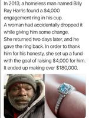

0

An anonymous reader quotes a report from the BBC: Internet access has started to be restored in Iran after being cut off almost three months ago, the country's first vice-president has said. "The first step toward free and regulated access to cyberspace has been taken," Mohammad Reza Aref wrote on X on Tuesday. Internet monitoring groups Netblocks and Kentik reported "partial" restoration around 13:00 GMT, though the latter warned most networks were still down.
The Iranian government cut internet access following the launch of US and Israeli attacks on February 28. Officials suggested the aim was to prevent surveillance, espionage and cyber-attacks. It is one of the longest-running national internet shutdowns ever recorded worldwide. A content creator from Tehran told the BBC that he had been able to connect to the internet using his home WiFi on Tuesday. "The main point is, some of my income will come back," he said.
Netblocks said it was unclear whether the internet return would be sustained, and told the BBC it was consistent with what it had seen when previous blackouts were lifted -- where restoration could take hours. "Access is not universally back to its original state, with some regional variation," said the global internet tracker's research director Isik Mater on Tuesday. She added that there were signs of "more extensive filtering" than prior to January -- when a similar blackout was imposed during the regime's deadly crackdown on anti-government protests -- "including additional restrictions to messaging apps like WhatsApp."
Read more of this story at Slashdot.
An anonymous reader quotes a report from Reuters: Ride-share drivers for app-based companies such as Uber and Lyft have unionized in Massachusetts, forming what state officials and labor leaders said was the first officially recognized organization in the U.S. to represent such gig workers. The newly formed App Drivers Union received certification from the Massachusetts Department of Labor Relations on Friday to represent nearly 70,000 ride-share drivers operating as independent contractors in the state.
"It changes the game for ride-share workers across this country," Massachusetts Governor Maura Healey, a Democrat, said at a rally with drivers and labor activists in Boston on Tuesday. The certification occurred after voters in November 2024 approved a ballot measure that created a novel framework to allow drivers for companies like Uber and Lyft to organize and bargain collectively over pay and benefits. That vote followed a years-long, nationwide battle over whether ride-share drivers should be considered independent contractors or employees entitled to benefits and wage protections.
Read more of this story at Slashdot.
An anonymous reader quotes a report from the New York Times: Pope Leo XIV on Monday set out a sweeping vision for corporate executives, politicians and individuals who will shape and be shaped by the future of artificial intelligence, warning leaders to safeguard humanity from A.I.'s most disruptive effects. Leo's declaration came in the form of a papal encyclical, an open letter to "all people of good will" that ran to roughly 42,300 words in its English version. It outlined his desire to protect human dignity and agency in an age in which technology threatens to replace humans in many professional and social roles. He presented it alongside Christopher Olah, a co-founder of Anthropic, a major A.I. developer, in a symbolic gesture of dialogue between leaders of the spiritual and technological worlds.
While emphasizing that "technology should not be considered, in itself, as a force antagonistic to humanity," he wrote that "the pursuit of greater profits cannot justify choices that systematically sacrifice jobs." Among other things, Leo called for:
- government regulation of the private companies that are driving the development of A.I.
- protection and retraining for workers whose jobs are threatened
- education to help students think critically about the technology
- action to protect children from violent, hypersexualized or fake information online that is often generated by A.I.
- safeguards to ensure that humans, not artificial intelligence, remain responsible for all decisions regarding the use of weapons.
Above all he emphasized the importance of retaining a fundamental social role for all human beings. "A society that guarantees employment to only a small fraction of the population, despite having a high level of technical development, risks exposing many to forced inactivity," he wrote. "This creates a paradox of material progress and anthropological regression that undermines the foundations of a just and stable social peace," he added. Anthropic's Christopher Olah said companies like his own need moral guidance to avoid being swayed by "a set of incentives and constraints that can sometimes conflict with doing the right thing."
"We need moral voices that the incentives cannot bend," Olah said. "Today is just the beginning -- the start of a long collaboration between those of us who are building this and those who can see what we, from the inside, cannot."
Read more of this story at Slashdot.
"The expansion of SpaceX's Starlink network of internet relay satellites continued Monday with a Memorial Day launch from Cape Canaveral Space Force Station," reports Spaceflight Now.
The mission added another 29 Starlink satellites to more than 10,000 already in low Earth orbit:
This was SpaceX's 60th orbital flight of the year, consisting of 59 Falcon 9 rockets and one Falcon Heavy rocket...
Nearly 8.5 minutes after liftoff, [Falcon 9 first stage] B1078 landed on the drone ship, 'A Shortfall of Gravitas,' positioned in the Atlantic Ocean off the coast of South Carolina. This was the 151st landing for this vessel and the 614th booster landing to date for SpaceX.
Meanwhile, the second stage shut down eight minutes and 39 seconds into flight and entered a coast phase, before short second burn at T+52 minutes. The stack of Starlink satellites deployed 61 minutes and 26 seconds after launch.
On X.com SpaceX shared footage of the booster rocket landing, and a longer video showing Starship's 12th test flight Friday.
Read more of this story at Slashdot.
Tech industry layoffs may be worse at large tech companies than the rest of the IT industry. The New York Times argues those layoffs have now shifted the culture at Big Tech companies, after interviewing more than two dozen of their workers. "Cooperation and collegiality are on the wane; chumminess between employees and managers has cooled as mutual suspicion pervades their relationships; and a throbbing economic anxiety infects almost every conversation.
"Perhaps no site on the internet reflects this transformation more vividly than Blind, where users can post in private channels restricted to employees of a single company, or public channels visible to anyone..."
Since 2022, large tech companies have collectively laid off more than 150,000 workers, unraveling what many tech workers once perceived as a guarantee of affluence and employability. The threat of being replaced by artificial intelligence has loomed over those who remain. This year alone, Amazon has indicated that it is laying off more than 15,000 workers, Block 4,000, Meta 8,000 and Oracle an estimated 30,000... By most measures, the sentiments that Blind tracks have taken a turn for the worse. During the nearly four years before tech companies began major layoffs in the fall of 2022, Meta and Microsoft employees posted about career success — topics like how to maximize their salary or win promotions — more than four times as often as they posted about job insecurity, according to Blind. Since then, the ratios have lurched in the opposite direction: Meta and Microsoft employees have posted about job insecurity roughly 1.5 times as often as they post about success...
The shift has had practical effects. A Meta employee said in an interview that some workers on her team now used less vacation time and that, in a break with custom, people frequently checked on their projects while on vacation. They increasingly worry about getting a poor performance review or losing their job if they aren't constantly available. The employee, who declined to be identified for fear of retribution, said she and many of her colleagues frequently checked Blind because it could be comforting to see how many other Meta workers shared their anxieties. Employees at several companies said in interviews that their morale was further undermined by the feeling that the layoffs were abrupt and arbitrary, and executed with little empathy.
Several tech workers said it was the scarcity of information about possible layoffs that raised their cortisol levels and made it difficult to focus on their jobs. They often fill the vacuum by turning to Blind, which, in addition to posts by workers, features a "tech layoff tracker" that lists both layoff rumors and those it has confirmed. "I was on Blind five days a week," said Faith Wilkins El, a software engineer who was laid off from Oracle in late March, after more than four years at the company. Wilkins El, who is part of the Oracle Workers Collective, a group seeking better severance agreements with the company, said navigating Blind was sometimes stressful because it was hard to know what was true or false. (Blind says it has a security team to weed out bad actors, like those who may try to register under fake email addresses.) Still, she found it more helpful than not because the layoffs came as less of a shock after she spent time on the site. "I was trying to get prepared mentally," she said.
Blind is capitalizing on the increased interest with new products. It plans to unveil a service called Blind AI, which will allow employers to simulate their workers' reactions to certain changes, like a stricter in-office mandate. And it is close to releasing a feature to alert users that layoffs are imminent.
Read more of this story at Slashdot.
"Think Olympics on steroids. Literally," quips the BBC, describing Sunday's controversial Enhanced Games event in Las Vegas featuring dozens of athletes "using performance-enhancing drugs to try and break world records in track, weightlifting and swimming.
Some $25m (£18.6m) in prize money is up for grabs — with cash prizes for winners... The drugs they use must be legal, and approved by the Federal Drug Administration. But substances like testosterone and human growth hormone — banned by the World Anti-Doping Agency — are not only celebrated here, they're encouraged and for sale...
Health experts warn that anabolic steroids and growth hormones can cause strokes and cardiovascular damage, among other risks. Event organisers claim Enhanced will push the limits of human performance while critics, especially in the Olympic movement, dismiss it as an affront to the spirit and founding principles of competitive sport...
Earlier this month, the Enhanced Group — the company behind the competition — began trading on the New York Stock Exchange. And the competition is seemingly being treated as an opportunity for Enhanced to sell performance-enhancing medicine and supplements online.
"The project was founded by entrepreneurs Aron D'Souza and Maximilian Martin in 2023," the artidcle points out, "and has attracted backing from prominent investors including billionaire Peter Thiel and Donald Trump Jr."
And NPR adds that "Most of the participating athletes trained for the competition in Abu Dhabi, as part of Enhanced's own study."
Enhanced did not break down what specific athletes used which drugs, but they announced on Wednesday in the lead-up to the event that 91% of the athletes competing used testosterone or testosterone esters, 79% used human growth hormone, and 62% used stimulants, such as adderall...
The games have been largely panned by outside medical experts and sports governing bodies. Multiple recent studies assess the harm surrounding the Enhanced Games. Travis Tygart, the CEO of the U.S. Anti-Doping Agency, called the games a "dangerous clown show that puts profit over principle" in a statement. The International Olympic Committee said the games are a "betrayal of everything that we stand for." The World Anti-Doping Agency (WADA) last year urged U.S. authorities to stop the games. The International Federation of Sports Medicine said in 2024 that they see the medical oversight as "insufficient" to support the
athletes.
Read more of this story at Slashdot.
Thursday California's governor issued an executive order "directing state agencies to prepare workers and businesses for AI-driven workforce disruption," reports San Francisco's KQED. In a statement the governor said "This moment demands that we reimagine the entire system — how we work, how we govern, how we prepare people for the future."
The order mandates agencies to explore a range of policy options, including severance standards, expanded unemployment insurance, job retraining programs aimed specifically at white-collar workers, worker ownership models and a concept the governor called "universal basic capital," giving all residents a stake in assets such as corporate stocks, bonds or wealth funds...
Tom Kemp, executive director of the California Privacy Protection Agency, applauded the fact that the order named data privacy as a consumer protection concern and highlighted the CPPA's automated decision-making technology regulations, which he called "the nation's most comprehensive." Others are more skeptical. "Catastrophic job loss from AI is not inevitable, it's a political choice," Lorena Gonzalez, president of the California Federation of Labor Unions, AFL-CIO, wrote in a statement. However, Gonzalez noted one area of genuine agreement: the order's emphasis on collective bargaining as a tool for protecting workers from AI displacement...
According to Stanford HAI's 2026 AI Index, software developers ages 22 to 25 are among those most likely to see their skills made redundant earliest. This year, U.S. employment fell nearly 20% from 2024, even as headcount for older developers continued to grow. Following the job cuts announced at Meta, a union of Alphabet workers in the U.S. and Canada released a statement that suggests Silicon Valley's own labor force may seek to organize... "It's undeniable that our whole industry is being transformed by the corporate push to adopt new AI tools," [Alphabet Workers Union-CWA Local 9009 said in a statement]. "It's hard not to feel anxiety and fear when we can see more and more tech companies cutting huge portions of their workforce both in anticipation of replacing them with AI, and to fund their multi-billion-dollar bets on AI as the future of the industry..."
In February, AFL-CIO President Liz Shuler and Gonzalez delivered what amounted to an ultimatum to Newsom: regulate AI or lose labor's support for any future presidential run. Shuler called a potential AI-driven economic collapse a coming "crisis." In August 2025, Newsom announced a partnership with Google, Microsoft, IBM and Adobe to expand AI education in California schools and community colleges, a workforce preparation push that now looks like a precursor to Thursday's more sweeping order.
The article notes that after signing the bill the governor shared this comment on X.com. "California will pursue new policies that make sure working Californians — not just Big Tech — benefit from the wealth and breakthroughs coming out of this space."
Newsom telegraphed Thursday's order earlier this week, when he appeared at the Center for American Progress IDEAS Conference in Washington. "Businesses are going to make a fortune, and that's why you cannot continue to have a payroll tax system that taxes jobs and then subsidizes automation."
Read more of this story at Slashdot.
0
AI "crashed the party" at this year's Cannes Film Festival, writes The Hollywood Reporter. The festival exposed "the fault lines reshaping cinema," their article argues, including how "AI is here — and the industry has stopped pretending otherwise."
A humanoid robot spotted marching up and down the Croisette seemed to sum up the worst AI fears of the film industry — the machines have arrived and they are taking your place. But inside the Palais and the market tents, the conversation over artificial intelligence had moved beyond fear into something more like uneasy acceptance. Fighting AI "is a battle we will lose," said Demi Moore, a Cannes jury member this year, at the festival's opening press conference, suggesting the film industry needs to "find ways in which we can work with it."
That's not the official Cannes line. The festival has banned films using generative artificial intelligence from its competition lineup. But at the Cannes film market, and in discussions at industry events over the past two weeks, the tone has shifted. AI-friendly tech giant Meta signed on as an official partner to the festival in a multiyear deal. Its AI tools were used to help produce an [out of competition] festival entry: Steven Soderbergh's documentary John Lennon: The Last Interview. [Meta's press release announcing the partnership touts "our creator partnerships," their Meta AI assistant, and "our latest AI and wearable technologies" including Ray-Ban Meta AI features for smartglasses like "AI-powered translations that break down language barriers in real-time".] At the Marché du Film [film market], there was an "AI for Talent Summit" that took the AI revolution as given, focusing instead on ethical AI use, data sovereignty and on the ways the technology can be used to enhance, rather than replace, creativity.
For the indie film industry, it felt like a turning point.
Read more of this story at Slashdot.
Hobbyist CNCDan is trying to build a real-world version of Windows' classic 3D Pinball for Windows -- Space Cadet, using 3D-printed flippers, bumpers, LEDs, slingshots, and a raised playfield modeled after the original virtual table. But in bringing the digital table into the real world, CNCDan has already run into several physical challenges the software never had to contend with... Ars Technica reports: After scaling and skewing the on-screen, perspective-shifted view of the Space Cadet playfield onto a 1-meter-tall table, he ended up with a rectangular playfield just 56 cm wide. That's on the smaller side for commercial pinball tables and maps to playfield bumpers that are just 53 mm wide -- way smaller than any prebuilt bumpers that are commercially available.
Once CNCDan dealt with issues with unreliable plastic microswitches for those tiny bumpers (Hall effect magnets seemed to help), he ran into a separate problem with the even smaller bumpers on the raised playfield. The wiring for those bumpers had to be arranged very carefully to avoid blocking a kickback return alley underneath, a positioning problem that the original designers of the virtual table didn't have to consider at all. CNCDan also ended up adding a physical mechanism to simulate the short delay 3D Space Cadet players may remember, when the ball dropped down a hole from the raised playfield back to the flippers below.
CNCDan says he's currently looking for artists to help him with a hand-drawn re-creation of the original Space Cadet playfield, which he doesn't want to use AI for. "I'm sure [AI] can do it, but I'd much rather give this job to a real human being," he said in the video.
Read more of this story at Slashdot.
wiredmikey shares a report from SecurityWeek: Anthropic says its Claude Mythos model discovered thousands of severe vulnerabilities across more than 1,000 open source software (OSS) projects. According to the AI giant, Mythos Preview has identified more than 23,000 potential vulnerabilities. Of these, 1,900 have been reviewed by external security firms, and 1,726 have been confirmed, including over 1,000 rated "high" or "critical" severity.
The findings are still being reviewed, and Anthropic estimates that nearly 3,900 critical and high-severity vulnerabilities will be confirmed based only on current findings. As the scans are ongoing, the company believes the number of severe vulnerabilities may reach 6,200. Anthropic says more than 1,100 unverified findings have been reported to vendors, and 75 issues with a critical or high severity rating have been patched. Vendors have published 65 security advisories. "The number of patches is still relatively low for three reasons. First, we're still early in the 90-day window that's set out in our Coordinated Vulnerability Disclosure policy: we expect many more patches to land soon," the AI company explained.
"Second, we are likely to be undercounting patches because some vulnerabilities are patched without a public advisory: in those cases, we're reliant on scanning for the patches ourselves using Claude. Third, the low volume of patches reflects a genuine problem: even at our relatively slow pace of disclosures, Mythos Preview is adding to an already-overloaded security ecosystem," it added.
Read more of this story at Slashdot.
Spain has temporarily blocked Polymarket and Kalshi while it investigates whether the prediction-market platforms are violating gambling laws by operating without a license. Engadget reports: The country's ministry in charge of consumer affairs said it blocked the websites as a precautionary measure pending an official investigation. This investigation will determine if the platforms violate Spain's gambling laws. It's set to complete within the next four months and could mandate that these companies require specific administrative licenses to operate.
Read more of this story at Slashdot.
"Following months of public debate and protests against American IT giant Kyndryl's proposed acquisition of Solvinity, a Dutch cloud provider that hosts the Netherlands' online identity platform, the Dutch government has decided to block the acquisition," writes longtime Slashdot reader rastakid. "The deal triggered fears that it would mean that 'DigiD' data would fall under foreign control, and could be demanded by U.S. authorities." Politico reports: In a letter to the national parliament published on Tuesday, State Secretary for Digital Economy Willemijn Aerdts said the national authority charged with screening investments had advised the government to block the acquisition. The purchase was seen as posing "a possible risk to the public interest."
The government on Monday decided to adopt the advice and block the acquisition, Aerdts said. "The Netherlands attaches great value to the presence of foreign, especially U.S.-based tech companies, and their added value to the Dutch economy and digital infrastructure, but it maintains, at the same time, an independent investment screening framework aimed at protecting the public interest and which applies equally to all investors, independent of their country of origin," the letter read. Kyndryl said in a statement it was "extremely disappointed" about the decision. "The politicization of this process has overshadowed the clear and important benefits this transaction would have brought to Solvinity's customers and Dutch citizens."
Further reading: Challenges Face European Governments Pursuing 'Digital Sovereignty'
Read more of this story at Slashdot.
Nvidia is retiring its classic Control Panel for GeForce Game Ready and Studio Driver users after 20 years, as it pushes users to a newer, more unified "NVIDIA" app. Longtime Slashdot reader BrendaEM first shared the news, commenting: "Nvidia seems to no long want you to have control over your own video card that you paid your hard-earned money for? WTF!?" VideoCardz.com reports: Existing Control Panel installs will remain on users' systems. NVIDIA says the old panel will only disappear after a clean driver installation. Users who still need it can continue to download it from the Microsoft Store, but NVIDIA will no longer add new features, fixes, or other changes.
The retirement currently applies to Game Ready and Studio Drivers. NVIDIA RTX PRO users will continue to receive Control Panel support until the company moves professional features to the NVIDIA app. For GeForce users, NVIDIA says the app now includes the modern functionality previously available through Control Panel. [...] The classic panel is therefore not being removed from every system overnight. It is being moved into maintenance mode for GeForce users...
Read more of this story at Slashdot.
California lawmakers are moving to exempt most open-source operating systems from the state's upcoming age-verification law after backlash from Linux and privacy advocates who warned that the original rules could force decentralized projects to collect users' ages. The amendment would likely shield major Linux distributions, though SteamOS and other Linux-based platforms tied to proprietary app stores may still face compliance questions. Tom's Hardware reports: Assembly Bill 1856 (AB 1856), currently moving through California's legislature ahead of committee reviews in June, would amend the state's earlier age-assurance law by excluding software distributed under licenses that allow users to "copy, redistribute, and modify the software." The proposed amendment specifically states: "Operating system provider" does not mean a person or entity that distributes an operating system or application under license terms that permit a recipient to copy, redistribute, and modify the software.
The amendment follows months of backlash after California passed the original Assembly Bill 1043 (AB 1043), formally known as the Digital Age Assurance Act, in late 2025. The law sought to shift online age verification away from individual websites and apps and down to the operating-system level instead. Under the original law, operating systems would be required to request a user's age or birth date during device setup, then expose an "age bracket signal" to apps and app stores. The law, which defined brackets such as "under 13," "13-15," "16-17," and "18+," immediately raised questions about how such requirements would apply to decentralized, open-source software ecosystems. [...]
AB 1856 does not repeal the original Digital Age Assurance Act. Instead, it narrows the definition of who qualifies as an "operating system provider" under the law. Commercial platforms with proprietary app ecosystems could remain subject to California's age-assurance requirements even if most open-source Linux distributions are ultimately exempted. California Assembly Member Buffy Wicks introduced the amendment on February 11, 2026. However, the open-source exemption language appeared in later revisions that began drawing attention across Linux and privacy communities. The latest version is dated May 18, 2026, and as of May 19, 2026, the bill was read a second time and ordered to third reading.
Read more of this story at Slashdot.
Phoronix reports on a presentation about trying FreeBSD on modern Framework laptop from last week's Open Source Summit hosted by the Linux Foundation:
With FreeBSD having worked on improving its laptop support over the past two years with some big changes and ongoing efforts for making a nice KDE desktop experience on FreeBSD, FreeBSD Foundation's Executive Director has been trying to daily drive FreeBSD on laptops...
With the Framework Laptop, the touchscreen "just worked" as did other basic functionality from the KDE desktop on FreeBSD, including peripherals like a wireless mouse. Among the challenges were Zoom failing for video calls but eventually working, the web camera took steps to enable, and Microsoft Teams only partially worked. With the help of online resources, ultimately she was able to succeed in her journey of running FreeBSD daily on a laptop.
Read more of this story at Slashdot.
Bloomberg : SK Hynix tops $1T in market value after shares jumped 11% on Wednesday, becoming the third Asian company to hit the mark; shares surged 900%+ in the past year — SK Hynix Inc. joined Micron Technology Inc. in surpassing the $1 trillion market capitalization milestone, reflecting investors …
Rebecca Torrence / Bloomberg : Sources: Fireworks AI, which helps companies run AI models, is in talks to raise funding at a $15B valuation after being valued at $4B in October 2025 — Fireworks AI, a startup that helps companies run artificial intelligence models, is in talks to raise a new round of funding that would value …
The Information : Source: AI inference provider Baseten is in talks to raise $1B at a post-money valuation of $11B, up from $5B after its $300M Series E announced in January — AI startup Baseten has recently been in talks with investors to raise $1 billion at an $11 billion valuation including the money …
Trishla Ostwal / Adweek : OpenAI hires ServiceNow CMO Colin Fleming as CMO for its business segment; he succeeds Kate Rouch, who stepped down earlier this year to focus on her health — OpenAI has hired ServiceNow chief marketing officer Colin Fleming as CMO for its business unit, a move that signals the AI company …
Harshita Mary Varghese / Reuters : US cybersecurity company Zscaler reports Q3 revenue up 25% YoY to $850.5M, above $835.4M est., and forecasts Q4 revenue below est.; ZS drops 18%+ after hours — Zscaler (ZS.O) forecast fourth-quarter revenue below estimates on Tuesday, signaling intensifying competition in the cybersecurity market …
Axios : Sources: Bond Capital is leading a new investment for AI startup Suno, which would value it at ~$5B, up from $2.45B last fall; Suno is expected to raise $250M+ — Bond Capital is leading a new investment for AI music startup Suno, which would be valued at around $5 billion, Axios Pro has learned.
Lawrence Abrams / BleepingComputer : Charter confirms a data breach after ShinyHunters claimed to steal 40M customer records from Charter's Salesforce instance and threatened to leak the data — U.S. telecommunications giant Charter Communications has confirmed it suffered a data breach after the ShinyHunters extortion group threatened …
Samantha Subin / CNBC : Micron hit a $1T market value for the first time on Tuesday as shares jumped 19%, driven by demand for its memory chips in the AI race — Micron topped a $1 trillion market value for the first time on Tuesday as shares popped 19%, driven by insatiable artificial intelligence demand for its memory chips.
Jeremy Kahn / Fortune : London-based Perceptic, which says its end-to-end AI platform for drug development is being used by top pharmaceuticals, raised a $12M seed led by Accel — A trio of former Palantir executives who helped spearhead that company's Life Sciences practice have founded a startup called Perceptic …
Nilay Patel / The Verge : Q&A with Sundar Pichai about reshaping the information ecosystem with Search changes, putting AI agents in everything, when AI will replace him as CEO, and more — Today, I'm talking with Google and Alphabet CEO Sundar Pichai, in a conversation we recorded just after the Google I/O developer conference.
Tom Warren / The Verge : Nvidia officially retires its GeForce Control Panel app after 20 years, following the porting of all of its major features to the Nvidia app — Nvidia has now ported across all of the major Control Panel features to its Nvidia app. … Nvidia announced more than two years ago that it was working …
Ivan Mehta / TechCrunch : Human Archive, which trains robots using first-person video from 1,000+ camera-equipped caps worn by Indian home services workers, raised $8.2M from YC and more — In the last few years, India's online food delivery market has grown significantly, with both Zomato and Swiggy going public …
Alex Weprin / The Hollywood Reporter : SpaceX filing: X's ad revenue was $1.8B in 2025, $1.7B in 2024, and $2.3B in 2023, below Twitter's $4B in 2021; X and Grok now have 6.3M active paid subscribers — SpaceX's IPO filing reveals ad revenue for X is still below what it was when Musk acquired Twitter, but it is growing again.
Leslie Josephs / CNBC : American Airlines picks SpaceX's Starlink for in-flight Wi-Fi on more than 500 planes; SpaceX already has contracts with United Airlines, Southwest, and others — American Airlines plans to outfit more than 500 of its narrow-body aircraft with Starlink, handing another win to Elon Musk's SpaceX unit …
Ian King / Bloomberg : Sources: Qualcomm reached a deal with ByteDance to supply millions of ASICs for AI data centers to support AI agents in the Doubao chatbot; QCOM jumps 4.48% — Qualcomm Inc. reached a deal with TikTok owner ByteDance Ltd. to supply chips for artificial intelligence data centers …